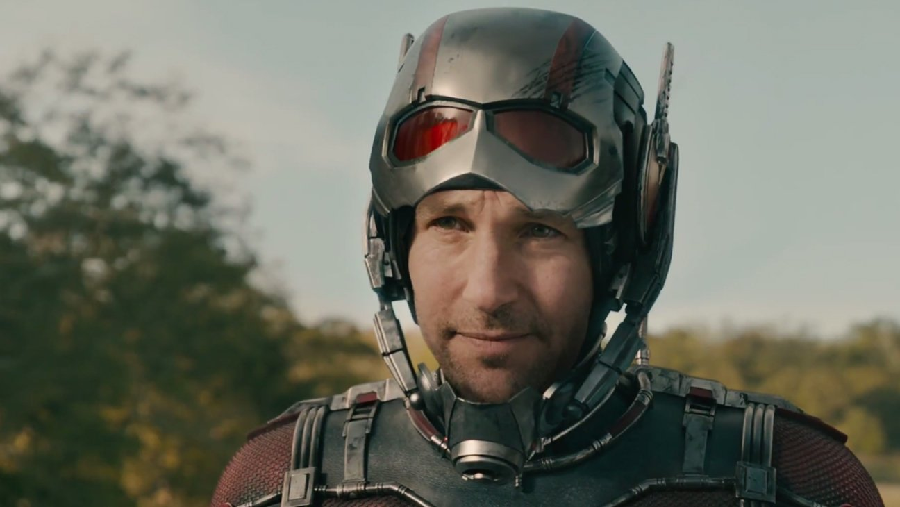

Paul Rudd sebagai Scott Lang/ Ant-Man, Ant-Man adalah salah satu karakter dalam komik Marvel. Pahlawan super yang kekuatannya terinspirasi dari binatang semut ini diciptakan oleh Stan Lee, Jack Kirby, dan Larry Lieber. Ant-Man pertama kali muncul pada komik Tales to Astonish vol 35 yang diterbitkan pada bulan Januari 1962.
Siapa sebernarnya Ant-Man? Pada komiknya, Ant-Man mengalami tiga kali pergantian karakter. Manusia semut pertama adalah Dr. Henry Hank Pym atau biasa dijuluki Hank Pym. Hank adalah seorang ilmuan yang menjadi Ant-Man setelah menemukan unsur bahan kimia baru yang bernama partikel Pym. Penemuannya tersebut berupa sebuah kostum yang dapat mengubah tubuh Hank. Hank dapat mengecilkan tubuhnya hingga seukuran semut dan juga dapat membesarkan tubuhnya hingga menjadi raksasa. Hank juga menciptakan sebuah Helm yang dapat mengontrol para semut dan serangga lain saat dirinya mengecil.
Karakter kedua adalah Scott Lang. Awalnya, Scott Lang adalah seorang pencuri. Scott menjadi Ant-Man setelah dirinya mencuri kostum Ant-Man dari Hank demi menyelamatkan anaknya yang bernama Cassie dari penyakit jantung. Setelah berhasil menyelamatkan sang anak, Scott pun akhirnya menjadi Ant-Man secara permanen menggantikan Hank Pym. Pada komik berjudul Avengers Disassembled yang terbit pada bulan Agustus 2004, Scott tewas dibunuh oleh Scarlet Witch bersama dengan Vision dan Hawkeye.
Karakter ketiga adalah Eric O'Grady. Eric adalah salah satu agent SHIELD namun masih berada di level bawah. Ia secara tak sengaja menemukan kostum Ant-Man di markas SHIELD. Eric pun mencuri kostum tersebut. Namun, bukannya menjadi pahlawan, Eric malah menggunakan kemampuan Ant-Man untuk tindakan kejahatan walaupun akhirnya bertobat dan bergabung dengan Avengers.
Pada film Ant-Man (2015), Karakter yang akan ditonjolkan adalah Scott Lang dan Hank Pym. Hank Pym diceritakan sedang mencari sosok Ant-Man baru untuk membantunya mengagalkan rencana jahat Yellow Jacket yang ingin membuat pasukan tempur mini. Hank tertarik pada Scott Lang yang memiliki hati yang baik yakni hidup untuk melindungi anak perempuannya yang sangat ia cintai. Marvel sepertinya mengubah cerita Ant-Man, sehingga alur pada komik berbeda dengan versi filmnya.